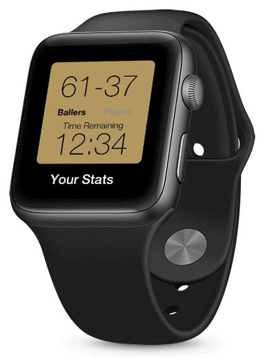

Animation Tool Leadership
For my animations, I decided to utilize the tool Principle. With the tutorials provided I learned enough to have basic knowledge on how to create animations. It was until it was drilled into my head about layer naming conventions that I started to utilize Principle to its fullest extent and became a Princi-PRO.
Selected Features
When deciding what to animate for my app, I looked at my screens in Sketch and chose what I felt were key features to the app, and thought about how I could display these static screens with movement. For inspiration, I looked at the NBA2k series. The video game uses its own unique animations in its UI to highlight key features.
Animations
Getting to the Game Selection map
Looking at stats for each player on different teams
Shooting ability by distance
Onboarding
Compare stats with a friend
Winning Screen
Opening the Smartwatch App
Scoring a three-point shot in game
